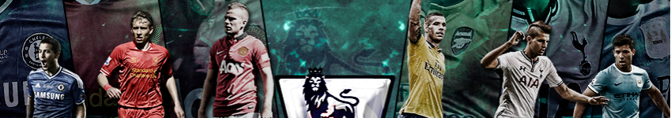
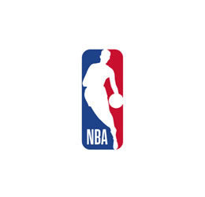

|  | |||||
|
|||||
|---|---|---|---|---|---|
sprots Keeps You Fit and ActiveN.B.AIn 1946 the Basketball Association of America (BAA) was formed and the first game was played in Toronto, Canada between the Toronto Huskies and the New York Knickerbockers. In 1949 the BAA merged with the National Basketball League (NBL) and became the National Basketball Association. The original NBA had 17 teams, but this was thought to be too many. So they merged teams over the next few years until they were down to as few as eight teams in 1953-1954. In 1954 they also introduced the shot clock of 24 seconds to speed up the game and to get teams to shoot more. Another major change came in the 1979-80 season when the three point shot was introduced. Since then the league has grown to thirty teams throughout the United States with one team in Canada. Many superstar players have gained international stardom such as Michael Jordan, Kobe Bryant, and LeBron James. Socceris a team sport which is played with a spherical ball between two teams of eleven players. They are opposed on a delimited rectangular ground, equipped with goals defined on the opposite widths. The objective of each side is to put the ball in the goal opponent, without using the arms, and doing it more often than the other team |
|||||
|
|||||